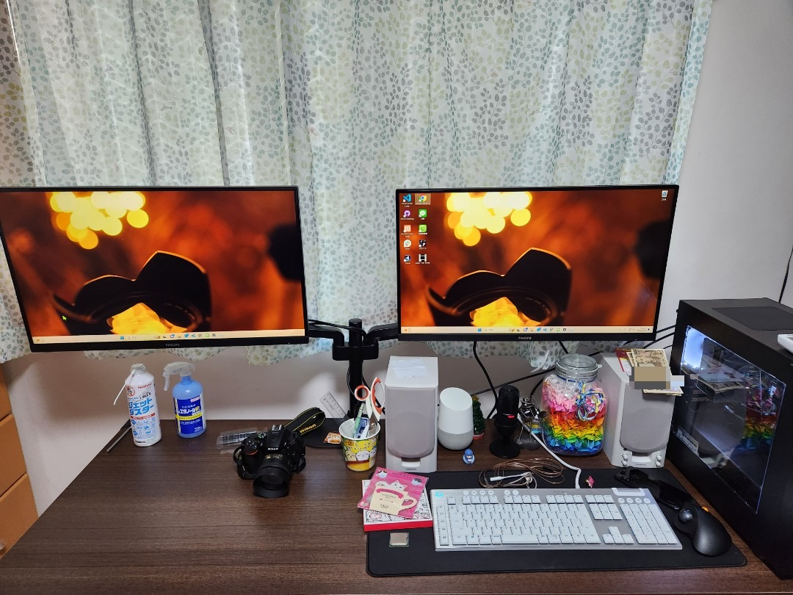
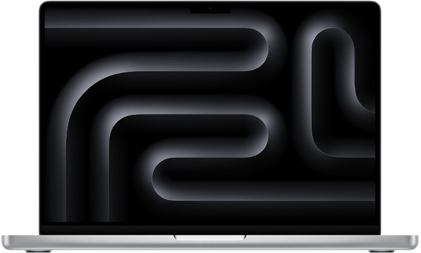
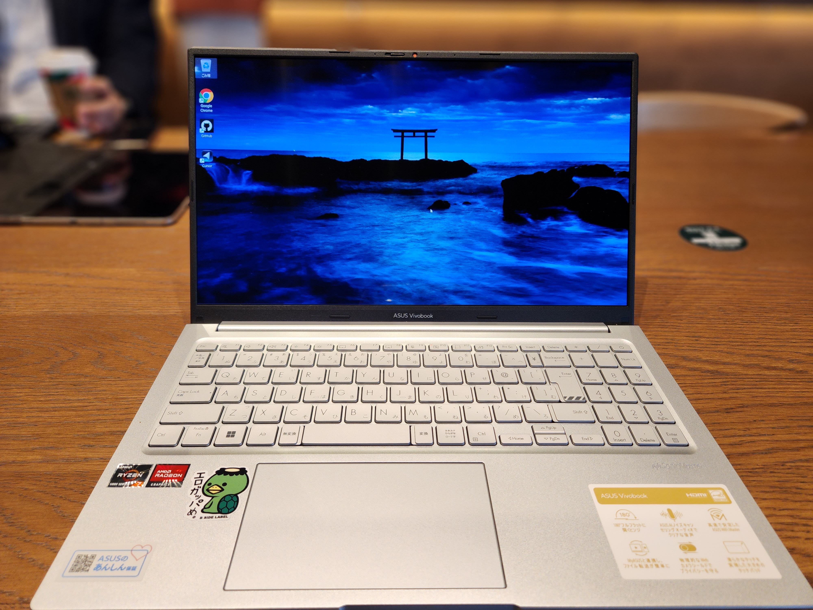
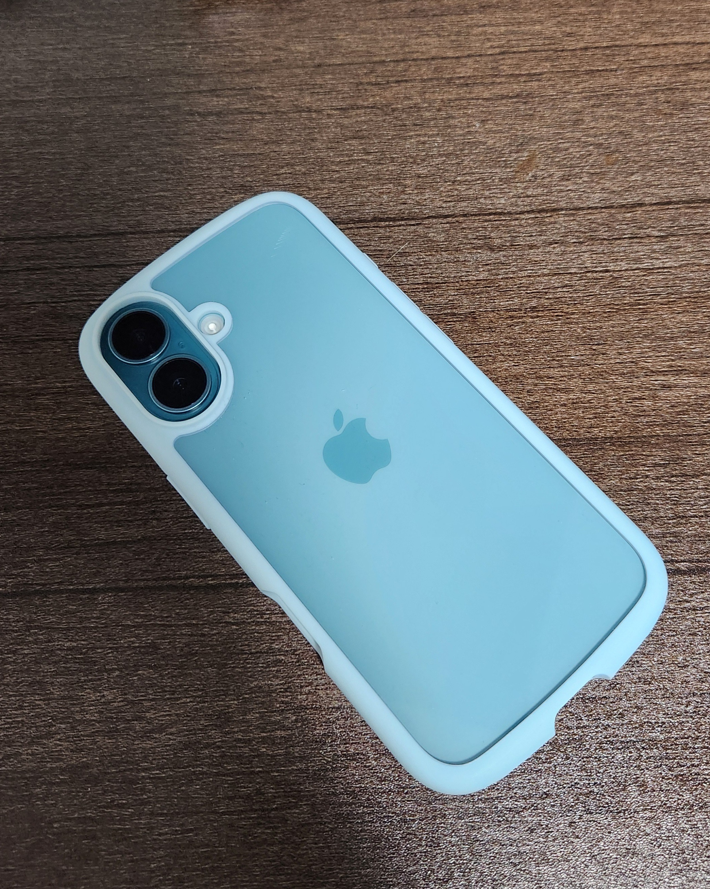
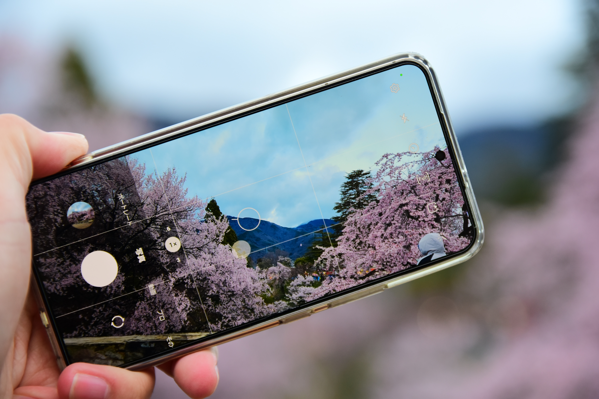

自己紹介
INIAD（東洋大学情報連携学部）に通う大学生です！（４月から）
よろしくお願いします！
趣味
ガジェット
スマホ、パソコンやカメラなどが好き！
音楽
クラシック、ロックが好き！
写真
物撮りや風景撮影が好き！
ガジェット
メインPC
高校二年生の頃に自作したメインPCです！
CPU: Core i5 13400
RAM: 32GB
ROM: 1TB
GPU: RX570
メインノートPC (Mac)
バッテリー持ちがいいパソコンを探していたらMacBookにたどり着きました。
CPU: M4
RAM: 24GB
ROM: 512GB
メインノートPC (Windows)
安くて性能がいいパソコンを探してたらこれになりました。デザインは微妙だけど性能は満足。
CPU: Ryzen 7 5800H
RAM: 16GB
ROM: 512GB
メインスマホ
Macに乗り換えると同時にiPhoneに変えました！
CPU: A18
RAM: 8GB
ROM: 256GB
サブスマホ
前のスマホです。バッテリー持ち以外は不満なし。